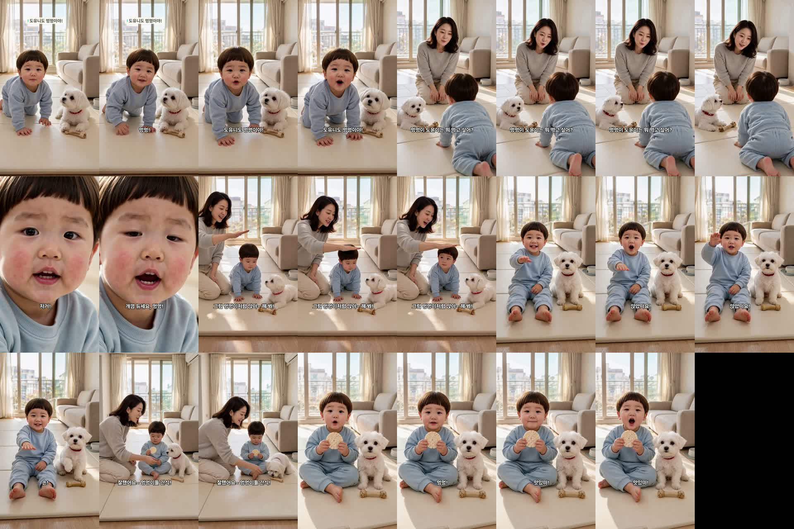

멍멍이 도윤이 — 완성본 검수
doyoon-mungmung-001 · R8 · 23.1초 · 7컷 · 허브 승인 큐 등록(work 3174b584)
완성본 · 썸네일
제목: 멍멍이가 된 두 살, 엄마가 «앉아» 하자 한 말
썸네일: 흰 줄 «멍멍! 도유니도 멍멍이야!» · 노란 줄 «개껌 듀세요» · 엄마·도윤이·콩이
썸네일: 흰 줄 «멍멍! 도유니도 멍멍이야!» · 노란 줄 «개껌 듀세요» · 엄마·도윤이·콩이
대표님께 확인 부탁드릴 것
1. 아기 발음 — 사전대로 «도유니 · 듀세요 · 앉았떠요 · 맛있떠». 받아쓰기는 표준어로 적어서 귀로만 판정할 수 있습니다.
2. 3번 컷 클로즈업 — H3가 두 번 다 얼굴 클로즈업으로 바꿨습니다. 대사가 클로즈업 안에 모두 들어 있어 그 구간만 썼고, 개껌을 가리키는 손은 이 컷에서 안 보입니다(1번 컷에 개껌이 보임).
3. 떡뻥 — 손에 들고 «맛있떠!» 합니다(입에 대는 장면 없음). 실물 질감으로 확대 확인했습니다.
2. 3번 컷 클로즈업 — H3가 두 번 다 얼굴 클로즈업으로 바꿨습니다. 대사가 클로즈업 안에 모두 들어 있어 그 구간만 썼고, 개껌을 가리키는 손은 이 컷에서 안 보입니다(1번 컷에 개껌이 보임).
3. 떡뻥 — 손에 들고 «맛있떠!» 합니다(입에 대는 장면 없음). 실물 질감으로 확대 확인했습니다.
컷별 측정
| 컷 | 대사 | 말한 사람 · 음높이 | 판정 |
|---|---|---|---|
| 1 | 멍멍! 도유니도 멍멍이야! | 도윤 348Hz | 통과 |
| 2 | 멍멍이 도윤이는 뭐 먹고 싶어? | 엄마 215Hz | 통과 |
| 3 | 저거! 개껌 듀세요, 멍멍! | 도윤 372Hz | 재발주 1회 · 클로즈업 구간만 사용 |
| 4 | 그럼 멍멍이처럼 앉아~ 해 봐! | 엄마 258Hz | 재발주 1회 · 손이 얼굴 앞 → 머리 위 |
| 5 | 앉았떠요! 손! | 도윤 416Hz · 콩이 앞발 듦 | 통과 |
| 6 | 잘했어요~ 멍멍이들 간식! | 엄마 262Hz | 통과 |
| 7 | 멍멍! 맛있떠! | 도윤 333Hz | 통과 |
도윤 음높이 기준 330Hz 이상 · 말 끝 뒤 0.12초에서 자름 · 컷마다 한 명만 말함
1초 간격 화면
